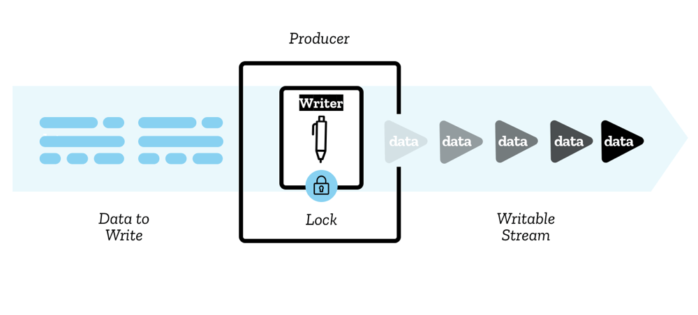
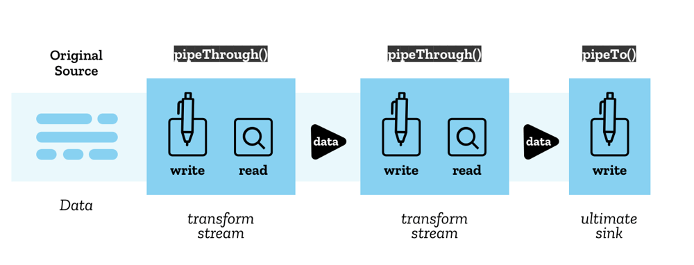

Insertable Stream¶
Abstract |
WebRTC Insertable Stream |
Authors |
Walter Fan |
Status |
WIP |
Updated |
2021-10-16 |
概述¶
Insertable Stream 可插入的流是新的 WebRTC API, 可用来操作通过 RTCPeerConnection 传送的 MediaStreamTracks 中的每一个字节。它让上层应用能对 WebRTC 底层媒体进行访问，让以往 WebRTC 应用中许多不可能做的情况都成为可能了
比如替换视频聊天时的背景，实时进行音视频处理（降噪，美颜，打水印，加特效等）
Stream API¶
Streams 标准提供了一组通用的 API，用于创建此类流数据并与之交互，这些数据体现在可读流、可写流和转换流中。
readable streams
writable streams
transform streams
这些 API 旨在更有效地映射到低级的 I/O 原始操作，包括在适当的情况下对字节流进行专门的处理。
它们允许将多个流轻松组合到管道链中，或者可以通过读取器和写入器直接使用。 最后，它们被设计为自动提供背压和排队。
阅读 Streams API Concepts 来了解背后的基本概念
用例¶
视频特效: 传入一个视频流 ，通过 transform stream 来实时地应用特效
解压： 传入一个文件流，通过 transform stream 有选择地从压缩包中解压文件，当用户滚动浏览图库时将它们转换为 img 元素。
图像解码：传入一个 HTTP 响应流，通过 transform stream 将字节流解码为 bitmap，再接一个 transform stream 将 bitmap 转换为 png
模型¶
一个数据块，称之为 chunk，它是从一个流中读入或写出的一个数据片段，它可以是任意类型，一个流甚至可以包含不同类型的 chunk
对于给定的流，chunk 通常不是最原子的数据单元； 例如，字节流可能包含由 16 KiB Uint8Array 组成的块，而不是单个字节。
可读流 ReadableStream¶
readable stream 是在 JavaScript 中由来自底层的 ReadableStream 对象表示的数据源——这是网络上或者本地某个地方的资源，可以从中获取数据。

有两种类型的底层数据源：
推送源 Push sources，它在您访问它时不断向您推送数据，可以开始、暂停或取消对流的访问，例如视频流和 TCP/Web 套接字中的数据流。
拉取源 Pull sources： 它要求您在连接后明确向它们请求数据，例如通过过 Fetch 或 XHR 调用进行的文件访问操作.
ReadableStream 代码示例：
const stream = new ReadableStream({
start(controller) {
},
pull(controller) {
},
cancel() {
},
type,
autoAllocateChunkSize
},
{
highWaterMark,
size()
}
);
可写流 WritableStream¶
可写流是您可以写入数据的目的地，在 JavaScript 中由 WritableStream 对象表示。 它用作对于底层接收器之上的抽象，一个可写入原始数据的底层的 I/O sink。
WritableStream 代码示例：
const stream = new WritableStream({
start(controller) {
},
write(chunk,controller) {
},
close(controller) {
},
abort(reason) {
}
},
{
highWaterMark,
size()
}
);
管道链 Pipe chains¶
Stream API 可以用一个称为 pipe chain 的结构将这些流一个一个串起来，具体方法有 pipeThrough 和 pipeTo
可插入流 Insertable Streams API¶
可插入流其实指的是一种转换流，它意为可以在媒体流的处理过程中插入一些处理逻辑。 它可使用 RTCRtpSender 和 RTCRtpReceiver 上附加的 API 来将处理代码插入媒体流的处理管道。
// New dictionary
dictionary RTCInsertableStreams {
ReadableStream readable;
WritableStream writable;
};
typedef (SFrameTransform or RTCRtpScriptTransform) RTCRtpTransform;
// New methods for RTCRtpSender and RTCRtpReceiver
partial interface RTCRtpSender {
attribute RTCRtpTransform? transform;
};
partial interface RTCRtpReceiver {
attribute RTCRtpTransform? transform;
};
由上面的定义可知，可插入流通过转换器 RTCRtpTransform 来实现，有两种转换器
SFrameTransform: 主要用来加解密， S 是 Secure 的首字母
RTCRtpScriptTransform：指对一般的 audio/video 帧的转换
SFrameTransform¶
接口定义如下
enum SFrameTransformRole {
"encrypt",
"decrypt"
};
dictionary SFrameTransformOptions {
SFrameTransformRole role = "encrypt";
};
typedef [EnforceRange] unsigned long long SmallCryptoKeyID;
typedef (SmallCryptoKeyID or bigint) CryptoKeyID;
[Exposed=(Window,DedicatedWorker)]
interface SFrameTransform {
constructor(optional SFrameTransformOptions options = {});
Promise<undefined> setEncryptionKey(CryptoKey key, optional CryptoKeyID keyID);
attribute EventHandler onerror;
};
SFrameTransform includes GenericTransformStream;
enum SFrameTransformErrorEventType {
"authentication",
"keyID",
"syntax"
};
[Exposed=(Window,DedicatedWorker)]
interface SFrameTransformErrorEvent : Event {
constructor(DOMString type, SFrameTransformErrorEventInit eventInitDict);
readonly attribute SFrameTransformErrorEventType errorType;
readonly attribute CryptoKeyID? keyID;
readonly attribute any frame;
};
dictionary SFrameTransformErrorEventInit : EventInit {
required SFrameTransformErrorEventType errorType;
required any frame;
CryptoKeyID? keyID;
};
RTCRtpScriptTransform¶
接口定义如下
// 定义视频帧的类型，最终会由 WebCodecs 标准来定义
enum RTCEncodedVideoFrameType {
"empty",
"key",
"delta",
};
dictionary RTCEncodedVideoFrameMetadata {
long long frameId;
sequence<long long> dependencies;
unsigned short width;
unsigned short height;
long spatialIndex;
long temporalIndex;
long synchronizationSource;
sequence<long> contributingSources;
};
//定义编码过的 video 和 audio 帧. 最终会由 WebCodecs 标准来定义.
[Exposed=(Window,DedicatedWorker)]
interface RTCEncodedVideoFrame {
readonly attribute RTCEncodedVideoFrameType type;
readonly attribute unsigned long long timestamp;
attribute ArrayBuffer data;
RTCEncodedVideoFrameMetadata getMetadata();
};
//音频帧的元数据，包含RTP中定义的 SSRC, CSRC
dictionary RTCEncodedAudioFrameMetadata {
long synchronizationSource;
sequence<long> contributingSources;
};
[Exposed=(Window,DedicatedWorker)]
interface RTCEncodedAudioFrame {
readonly attribute unsigned long long timestamp;
attribute ArrayBuffer data;
RTCEncodedAudioFrameMetadata getMetadata();
};
// 定义 JavaScript-based transforms.
[Exposed=DedicatedWorker]
interface RTCTransformEvent : Event {
readonly attribute RTCRtpScriptTransformer transformer;
};
partial interface DedicatedWorkerGlobalScope {
attribute EventHandler onrtctransform;
};
[Exposed=DedicatedWorker]
interface RTCRtpScriptTransformer {
readonly attribute ReadableStream readable;
readonly attribute WritableStream writable;
readonly attribute any options;
};
[Exposed=Window]
interface RTCRtpScriptTransform {
constructor(Worker worker, optional any options, optional sequence<object> transfer);
};
案例¶
通过 WebRTC Insertable Streams 实现的真正的端到端加密¶
搭建一个本地的 peer connection, video1 元素放置本地获取的 stream, video2 元素放置从远程获取的 stream
这里也放置了一个 videoMonitor 元素来模拟为中间人 middlebox, 它从 peer connection 中拿到媒体流，不经 decode 而直接播放。
大致流程为:
localStream(video1) --> 加密 --> peerConnection --> 解密 --> video2(remoteStream)
|
v
videoMonitor(未解密的)
从 RTCPeerConnection 中获取 RTCRtpSender 和 RTCRtpReceiver
explain: https://webrtchacks.com/true-end-to-end-encryption-with-webrtc-insertable-streams/
codes: https://github.com/webrtc/samples/tree/gh-pages/src/content/insertable-streams/endtoend-encryption
下面的代码演示如何在原本发送到远端的视频流，RTCRtpSender 中的数据流是
readableStream --> writableStream
现在在中间插入一个转换流
readableStream --> senderTransformStream -> writableStream
代码示例：
const sender = pc1.addTrack(stream.getVideoTracks()[0], stream);
const senderStreams = sender.createEncodedVideoStreams() :
const senderTransformStream = new TransformStream({
transform: (chunk, controller) {
//这里可以做加密
console.log(chunk, chunk.data.byteLength);
controller.enqueue(chunk);
}
});
senderStreams.readableStream
.pipeThrough(senderTransformStream)
.pipeTo(senderStreams.writableStream);
完整代码参见 WebRTC example: https://webrtc.github.io/samples/src/content/insertable-streams/endtoend-encryption/
转换流的实现是在一个 web worker 中实现的，主线程与 worker 线程通过消息来通信
const worker = new Worker('./js/worker.js', {name: 'E2EE worker'});
function setupSenderTransform(sender) {
const senderStreams = sender.createEncodedStreams();
const {readable, writable} = senderStreams;
worker.postMessage({
operation: 'encode',
readable,
writable,
}, [readable, writable]);
}
function setupReceiverTransform(receiver) {
const receiverStreams = receiver.createEncodedStreams();
const {readable, writable} = receiverStreams;
worker.postMessage({
operation: 'decode',
readable,
writable,
}, [readable, writable]);
}
}
在 worker 中
对于 encode 消息的处理就是插入一个用来加密的 transformStream（处理函数为 encodeFunction）
对于 decode 消息的处理就是插入一个用来解密的 transformStream（处理函数为 decodeFunction）
onmessage = async (event) => {
const {operation} = event.data;
if (operation === 'encode') {
const {readable, writable} = event.data;
const transformStream = new TransformStream({
transform: encodeFunction,
});
//处理管道经由 transformStream 的 encodeFunction 做 encode
readable
.pipeThrough(transformStream)
.pipeTo(writable);
} else if (operation === 'decode') {
const {readable, writable} = event.data;
const transformStream = new TransformStream({
transform: decodeFunction,
});
//处理管道经由 transformStream 的 decodeFunction 做 decode
readable
.pipeThrough(transformStream)
.pipeTo(writable);
} else if (operation === 'setCryptoKey') {
if (event.data.currentCryptoKey !== currentCryptoKey) {
currentKeyIdentifier++;
}
currentCryptoKey = event.data.currentCryptoKey;
useCryptoOffset = event.data.useCryptoOffset;
}
};
encodeFunction 的实现如下，主要是把视频帧中的数据取出，将视频数据与加密 key 进行异或, 做一个简单的加密，然后再加入 key 的标识和校验和 (checksum), 再把处理过的数据写回 encodedFrame.data。最后，将 encodedFrame 追加到 controller 的队列末尾。
function encodeFunction(encodedFrame, controller) {
if (scount++ < 30) { // dump the first 30 packets.
dump(encodedFrame, 'send');
}
if (currentCryptoKey) {
const view = new DataView(encodedFrame.data);
// Any length that is needed can be used for the new buffer.
const newData = new ArrayBuffer(encodedFrame.data.byteLength + 5);
const newView = new DataView(newData);
const cryptoOffset = useCryptoOffset? frameTypeToCryptoOffset[encodedFrame.type] : 0;
for (let i = 0; i < cryptoOffset && i < encodedFrame.data.byteLength; ++i) {
newView.setInt8(i, view.getInt8(i));
}
// This is a bitwise xor of the key with the payload. This is not strong encryption, just a demo.
for (let i = cryptoOffset; i < encodedFrame.data.byteLength; ++i) {
const keyByte = currentCryptoKey.charCodeAt(i % currentCryptoKey.length);
newView.setInt8(i, view.getInt8(i) ^ keyByte);
}
// Append keyIdentifier.
newView.setUint8(encodedFrame.data.byteLength, currentKeyIdentifier % 0xff);
// Append checksum
newView.setUint32(encodedFrame.data.byteLength + 1, 0xDEADBEEF);
encodedFrame.data = newData;
}
controller.enqueue(encodedFrame);
}
decodeFunction
decodeFunction 的实现如下，主要是把视频帧中的数据取出，先检查校验和(checksum), 再检查加密 key 的标识，如果都没问题就用加密 key 与视频数据进行再次异或来实现简单的解密，最后，将 decodedFrame 追加到 controller 的队列末尾。
function decodeFunction(encodedFrame, controller) {
if (rcount++ < 30) { // dump the first 30 packets
dump(encodedFrame, 'recv');
}
const view = new DataView(encodedFrame.data);
const checksum = encodedFrame.data.byteLength > 4 ? view.getUint32(encodedFrame.data.byteLength - 4) : false;
if (currentCryptoKey) {
if (checksum !== 0xDEADBEEF) {
console.log('Corrupted frame received, checksum ' + checksum.toString(16));
return; // 这可能是加密 key 设定了，但是收到了未加密的视频帧
}
const keyIdentifier = view.getUint8(encodedFrame.data.byteLength - 5);
if (keyIdentifier !== currentKeyIdentifier) {
// 这是加密 key 和解密的 key 不一致
console.log(`Key identifier mismatch, got ${keyIdentifier} expected ${currentKeyIdentifier}.`);
return;
}
const newData = new ArrayBuffer(encodedFrame.data.byteLength - 5);
const newView = new DataView(newData);
const cryptoOffset = useCryptoOffset? frameTypeToCryptoOffset[encodedFrame.type] : 0;
for (let i = 0; i < cryptoOffset; ++i) {
newView.setInt8(i, view.getInt8(i));
}
for (let i = cryptoOffset; i < encodedFrame.data.byteLength - 5; ++i) {
const keyByte = currentCryptoKey.charCodeAt(i % currentCryptoKey.length);
newView.setInt8(i, view.getInt8(i) ^ keyByte);
}
encodedFrame.data = newData;
} else if (checksum === 0xDEADBEEF) {
return; // encrypted in-flight frame but we already forgot about the key.
}
controller.enqueue(encodedFrame);
}
至此，无论是采用 P2P 还是 SFU, 都不怕再有“中间人攻击”，只有通信的双方共享一个加密 key , 他们之间才能看到彼此正常的视频。在实际应用了，加密 key 的管理会更复杂，还需要加盐，加密算法多半会用 AES。